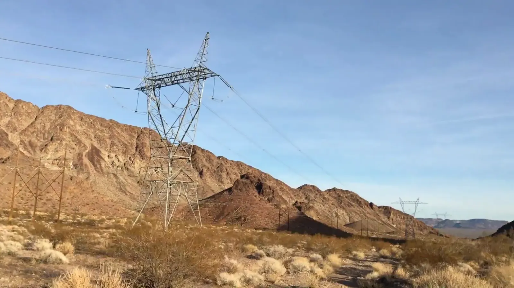

Still Waters
The road to Arizona Hot Springs is anything but wild: high-voltage towers and dry grass, until the hills turn red in the late light. The springs sit in Black Canyon, the narrow gorge the Colorado River cut through volcanic rock just below Hoover Dam. By dusk on a Saturday in late January I was making my way down the trail, with the sky going pink and orange behind a flat-topped mesa and the path winding through dark volcanic rubble. Camp went up after dark on a gravel bar beside the river, beneath a gnarled bare tree and clouds glowing with moonlight.
Sunday morning was cold and perfectly still. The river had turned to glass, doubling the rust-red walls and the blue sky above them. The Colorado runs cold here all year, because the dam upstream releases water from deep in Lake Mead, which makes it even stranger that hot water seeps out of the rock nearby! Somewhere underground, groundwater gets heated by the earth and finds its way back up through the cracks. A dry wash between narrow walls leads to the springs, where a pool is held in by sandbags beneath a wall streaked with minerals. Go in winter, like I did. Hot water is a gift on a cold morning.

The moon that lit up camp went full a few nights later and slid into Earth's shadow as a super blue blood moon: a supermoon, a blue moon and a total lunar eclipse all at once. I caught one frame of it, copper against the black. Two weeks after the hot springs I spent another night on the water, this time by kayak. By day the water curled between rust-brown and black cliffs. After dark the walls went to pure silhouette, and three kayaks sat pulled up on a pebble beach beneath a dead shrub while the clouds glowed orange. I'm pretty sure that glow was Las Vegas, two million people reduced to a smudge on the clouds. Somehow a place this quiet sits a short drive from the Strip.